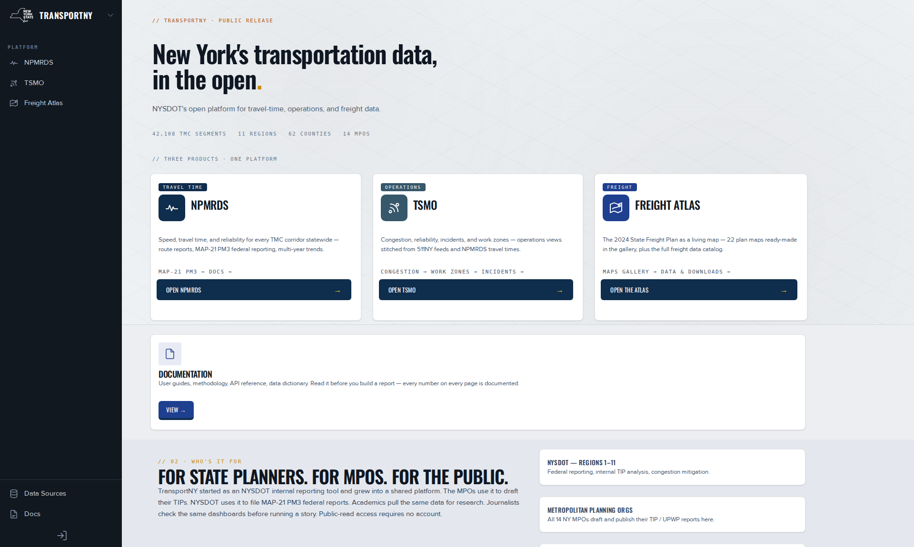

Find your way around TransportNY.
One landing page, three products, one documentation site. How the product switcher, the side navigation and the address bar work, so you can reach any page and share exactly what you see.
Before you start
Start at the landing page, the platform's front door, or on any product page. No account is needed.
Steps
- Open the landing page.Its side navigation lists Platform, NPMRDS, TSMO and Freight Atlas. This is the product switcher.
- Select a product, for example TSMO.Its home page opens with its own side navigation.
- Use the side navigation to reach a page. The entries are listed below.
- Inside a product, open the product switcher at the top of the side navigation to change product.It lists NPMRDS, TSMO and Freight Atlas, marks the current one, and ends with Platform home.
- Select Platform home to return to the landing page.
- To share a page, copy the address from the address bar and send it.Whoever opens it sees the same page and state.

Each product's side navigation
Every side-navigation entry, in screen order.
| Where | Side navigation entries |
|---|---|
| Landing page | Platform · NPMRDS · TSMO · Freight Atlas |
| NPMRDS | Home · Macro View · Reports · MAP-21 PM3. Route Comparison is not in the navigation: open it from the Route comparison section of the NPMRDS home page. |
| TSMO | Dashboards: Congestion · Reliability · Incidents · Work Zones. Explorers: Incident Search · Corridor View. Program: About TSMO · Data & Methodology |
| Freight Atlas | Home · Freight Atlas · Maps Gallery · Data & Downloads · About & The Plan |
Navigation controls
| Control | What it does | Values | Default |
|---|---|---|---|
| Product switcher (landing page) | Opens a product | Platform · NPMRDS · TSMO · Freight Atlas | Platform (the landing page) |
| Product switcher (top of a product's side navigation) | Changes product. Sign-in is kept, except for NPMRDS | NPMRDS · TSMO · Freight Atlas · Platform home | The current product, marked |
| Platform home | Returns to the landing page | One link | The landing page |
| Side navigation | Moves between a product's pages | The entries in the table above | Home |
| Docs link (planned) | Opens this documentation | /docs | The documentation home |
| Address bar | Carries the page state for sharing | Filters, layers, view settings | Clean address |
Where the documentation is
One documentation site serves all three products, sectioned by product. The intended path is the Docs link in each product's navigation. That link is not built yet. Until it is, add /docs to the site address. TSMO also has an in-product Data & Methodology page. Canonical definitions are in Measures & Data.
Share a page by its address
The address is the state. TSMO dashboards keep Year and Region in the address, so a colleague opens the same view. The Macro View writes only the settings you changed and drops values that no longer exist, so an old link opens with defaults. A shared link is not a permanent citation: download the figure if it matters. See Macro View: how to use. The Freight Atlas map encodes its layers with ?layers=. See Use the map.
Limits and gotchas
- The landing page\'s Data Sources link asks visitors without an account to sign in. It is meant to be public; this is a known issue.
- Platform home does not name its destination: the landing page.
- NPMRDS runs on its own subdomain. Switching to it may ask you to sign in again. See Sign in, sessions and accounts.
Troubleshooting
"Platform home": what does that do?
It returns you to the landing page.
The docs link took me to NPMRDS docs
Older links point at the previous, per-product documentation. This site replaces it. Use /docs.